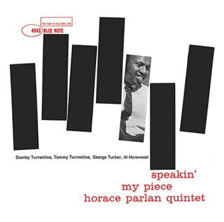

Uploaded 01/22/2019
It’s the 1960s in New York. You walk into a record shop and instead of being guided by your ears, you find yourself being guided by your eye. Ironic, isn’t it? Unless you have heard the album or song before, you are thinking of an artist in particular before walking in, or the shopkeeper happens to be playing a record you like, the sense that you are using to choose among an array of albums is not sound, but rather sight. Why would you, or anyone else in the store be using their eyes to make decisions about what they will be enjoying (or not) later with their ears? The answer is simple: instantaneity. Although technically not impossible, it would be highly inefficient to play every record in the store (or even every record of a certain genre) in order to choose one. Playing one by one would take too long and playing them at the same time would require too many record players and would ultimately result in an inharmonious nightmare. The album cover offers a solution by displaying a unique design for an album, visible to anyone in the record shop at the same time. In order to go further in depth with the effect of the album cover, I will use as an example the work of Reid Miles, known for his work as a graphic designer for the Blue Note record label in the 1950s and 1960s.
The most challenging aspect of designing album covers is portraying or encompassing the content of another medium, music, which cannot be used in the medium one is designing. However, Reid Miles succeeded by creating the effect of movement, more specifically movement in time, in a static design. By doing so, he brought one of the most fundamental elements of the medium of music, sound, which persists over time, to the album cover, which of course, does not move or change over time - not for now, at least. His meticulous use and intertwining of photography, typography, colors, and shapes gave the Blue Note record label a unique look which can now be considered the look of jazz, more specifically Hard Bop - a subgenre of jazz that became popular in the mid-1950s. In his designs, he often brought forward the intricacy of the Hard Bop melodies.
Take for example the album cover for “Speakin' My Piece” by the Horace Parlan Quintet. The black rectangles on the white background resemble piano keys, being that Horace Parlan was a jazz pianist. Miles intelligently placed Parlan’s black and white picture as one of the black keys. However, the placement of the keys is what emphasizes my point made above. The slanted and crooked keys bring about the notion of movement, and therefore, piano playing. In “The Medium is the Message,” Marshall McLuhan states that “cubism, by giving the inside and outside, the top, bottom, back, and front and the rest, in two dimensions, drops the illusion of perspective in favor of instant sensory awareness as a whole.” One can clearly draw a parallel between cubism’s translation of the three-dimensional plane into the two-dimensional plane and Miles’ interpretation of sound in the two-dimensional plane. Reid Miles’ work is the epitome of the Jazz as an album cover and ultimately using one medium to describe the content of a completely different medium.
You can look at more of Reid Miles’ work here.
Uploaded 01/22/2019
In “The Medium is the Message,” Marshall McLuhan argues that the medium by which any message is delivered is far more significant than the actual content. The medium used gives information about its relevance and effect in a given society. For example, the effects that result from the content of a book are not as important as the effects of print itself. This is convincing considering that the content of a book may not have had as big of an effect if it weren't for the printing press. The printing press facilitated the distribution of information, and its consequences include the creation of nationalism in the sixteenth century. While the content of books or newspapers has been and is essential in our everyday lives, it is the printing press that has allowed them to reach that role in our society.
Much like print, social media has started to shape our society’s behavior. (In this case, “our society” refers to those who use or are surrounded by social media. As mentioned by McLuhan, the effects of these media only extend to those who have access to it.) Whatever content someone sends, posts, tweets or uploads does not and will never say as much as the effects it is having in shaping our society in the early twenty-first century. Moreover, McLuhan, in “Challenge and Collapse” states that “technical change alters not only habits of life, but patterns of thought and valuation.” We have come to the point at which some of our actions are, in part, the consequence of the existence of social media - for example, filming a video or picture for the sake of it being uploaded. These actions would not take place if it weren't for these platforms and they show the power of technology to create its own demand.